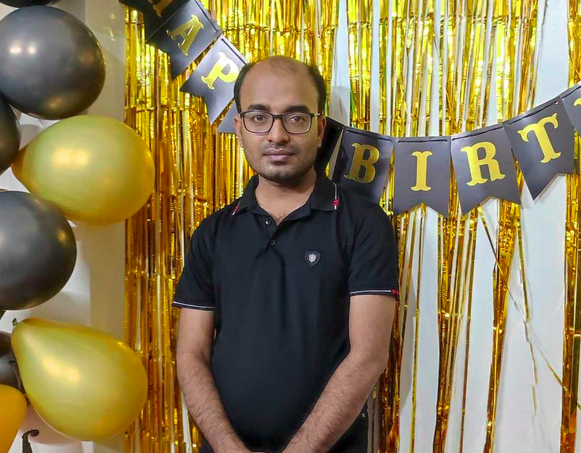

Rabindra Nath Nandi
|
 |
Rabindra Nath Nandi
12+ years in Machine Learning, NLP, and AI product engineering
Principal Machine Learning Engineer
ReliSource, Boston, MA, USA
Email: rabindro.rath@gmail.com
Currently leading ML initiatives at ReliSource, focusing on scalable, production-grade AI solutions for global clients.
Previously, Lead NLP Engineer at Hishab Ltd, building LLM-based customer care and voicebot systems for millions of users. Passionate about low-latency, robust AI for real-world impact, especially in low-resource languages. BSc in Computer Science & Engineering, KUET (2014) |
{kind=link}
Research Interests
- Large Language Models (LLMs), Multilingual NLP, Speech Processing
- Low-resource Language Technologies
- Conversational AI, Dialogue Systems
- Information Retrieval, Text Mining
- AI for Social Good
Publications
Zien Sheikh Ali1, Hunzalah Hassan Bhatti1, Rabindra Nath Nandi2, Shammur Absar Chowdhury1, Firoj Alam.
MENASpeechBank: A Reference Voice Bank with Persona-Conditioned Multi-Turn Conversations for AudioLLMs. Feb, 2026
EMNLP 2026(Main) [Accepted]Shahriar Kabir Nahin, RN Nandi, Sagor Sarker, Firoj Alam et al.
TituLLMs: A Family of Bangla LLMs with Comprehensive Benchmarking. Feb, 2025
ACL 2025Mohammad Jahid Ibna Basher Md Kowsher, Md Saiful Islam, Rabindra Nath Nandi et al.
BnTTS: Few-Shot Speaker Adaptation in Low-Resource Setting
NAACL 2025Rabindra Nath Nandi, Suman Maity, Brian Uzzi, Sourav Medya.
An Experimental Analysis on Evaluating Patent Citations
EMNLP 2024RN Nandi, SA Chowdhury, F. Alam.
Pseudo-Labeling for Domain-Agnostic Bangla Automatic Speech Recognition
BLP Workshop@EMNLP2023RN Nandi, F. Alam.
TeamX at CheckThat! 2023: Multilingual and Multimodal Approach for Check-Worthiness Detection
CLEF 2023M. Hasanain, A. El-Shangiti, RN Nandi, P. Nakov, F. Alam.
QCRI at SemEval-2023 Task 3: News Genre, Framing, and Persuasion Techniques Detection Using Multilingual Models
SemEval-2023A. Barrón-Cedeño, F. Alam, T. Caselli, G. Da San Martino, RN Nandi et al.
The clef-2023 checkthat! lab: Checkworthiness, subjectivity, political bias, factuality, and authority
ECIR 2023RN Nandi, F. Alam, P. Nakov.
Detecting the Role of an Entity in Harmful Memes: Techniques and their Limitations
CONSTRAINT Workshop@ACL2022
Updates (more)
08/2026 One paper accepted by EMNLP 2026. Paper Link
11.2025 Invited Speaker in Polyglot Workshop: Developing LLMs for Low-Resource Languages. Polyglot Workshop, University of Bonn
02.2025 Recent Paper on Bangla LLM Pretraining accepted by ACL 2025. Paper Link
01/2025 One paper accepted by NAACL 2025. Paper Link
09/2024 One paper accepted by EMNLP 2024. Paper Link
11/2023 One paper accepted by BLP Workshop@EMNLP2023. Paper Link
03/2023 One paper accepted by SemEval-2023. Paper Link
06/2023 One paper accepted by CLEF 2023 - CheckThat! Lab. Paper Link
12/2022 One paper accepted by ECIR2023. Paper Link
03/2022 One paper accepted by CONSTRAINT Workshop@ACL2022. Paper Link
03/2022 One paper accepted by DravidianLangTech@ACL2022. Paper Link
Projects
Speech and NLP
Rasa based and LLM based voice bot solutions for microfinance organizations, 2023-2024
Features: use-case analysis, prompting, RAG, user data management, reduce latency and hallucination, deployment, real-time monitoringTokenizer Build for In-House LLM, 2023
Features: Data collection, deduplication checking, tokenizer built like as gpt-3 and llama tokenizer and check performance.Bangla Spell Checker, 2023
Features: Data collection, Model Training and ValidationDevelop a Text-to-Speech Engine for Bangla Language, 2023
Features: Evaluate state-of-art dataset and models to figure out a product grade TTS SystemSlang Detector, 2017
Features: Dataset Collection and Labelling, Model training and validation, API (Java Based)News Recommendation System, 2016
Features:News Downloader,SubCategory Extraction, Topic Modelling
Computer Vision
EdgeAI based personalized assistant in mobile app, 2021-22
Features: Model inference in on-device for both image, text and heterogenous data, lightweight ML modelsFaceAI SDK Development, 2020-2021
Features: Low latency, high accuracy, near realtime inferenceFacial Action Unit Detection, 2019
Features: Data Collection tools, Data Labeling, Model training and validation, Deployment for Facial Action RenderingParking Area Detection and Illegal Parking Identification from real time CCTV videos, 2019
Features: Data annotation, Object Detection and Re-Identification, Semantic Segmentation, Geometric Algorithm, Video Analysis
Others
Other Activities
Program Committee, Second Workshop on Bangla Language Processing, AACL-IJCNLP 2025.
Program Committee, First Workshop on Bangla Language Processing, EMNLP 2023.
Task Organizer, CheckThat! Lab at CLEF 2023, Greece, 2023.
Reviewer of BLP Workshop @ EMNLP 2023, CLEF2023 - CheckThat! Lab, DravidianLangTech-Workshop@ACL2022
📸 Life & Gallery


Recent Post
Miscellaneous
GitHub: 3.6k Stars and 1k Forks
Stack Overflow: 1.4k reputations and 1.2 million reach
Directly mentored 20+ engineers